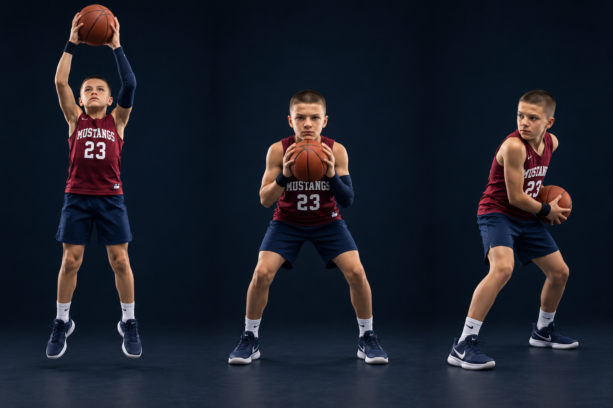

Toughness means pursuing the ball and keeping control. Predict where the miss will go, move to it, and jump to meet it at your highest controllable reach. Do not wait under the ball with planted feet.
PHOTO WALKTHROUGH
Clear stills · one action at a time
3 photo steps

01
Step 1 · Attack the ball
STEP 01
Attack the ball
Move first. Jump and catch with two hands.
Find the ball, get to its path, and take off under control. Reach with both hands and spread your fingers around the ball.
In a live game, establish legal rebounding position first. In our self-rebound drill, follow the shot immediately and pursue its bounce.
Catch this mistake
Waiting flat-footed or jumping into another player. Go to an open landing space.
02
Step 2 · Land and secure
STEP 02
Land and secure
Soft knees. Ball high. Elbows controlled.
Bring the ball firmly toward your upper chest, just under the chin, as you regain balance. Keep your eyes available to see the floor.
Use a comfortable base and absorb the landing with bent knees. Keep elbows naturally bent; do not flare them out to hit or clear a defender.
Catch this mistake
Dropping the ball into traffic or swinging elbows. Strong hands and body position protect it.
03
Step 3 · Turn to the outlet
STEP 03
Turn to the outlet
Body between pressure and ball. Look before passing.
Once balanced, pivot away from pressure and locate a teammate in a clear passing window. Keep the ball close during the turn.
A protected side pocket can be useful after the secure catch. Pass when the outlet is open; use a controlled dribble only when allowed and useful.
Catch this mistake
A blind spin or automatic dribble into traffic. Scan, then decide.
AI-created photo illustrations for teaching body positions. These are separate stills, not slow-motion game footage. Use the written cues and diagrams for movement direction and rules.
GO GET IT → CHIN IT → SEE THE FLOOR
KEEP IT LEGAL
Know the boundary
A wide elbow is not a free space-making tool. Do not push, displace, or swing through an opponent. Your landing and any pivot must remain legal.
TRY IT AT PRACTICE
Start slow, then add a read
Partner tosses the ball slightly off-center. Pursue, jump, secure, land, and find the coach’s outlet target. Do 5 controlled reps each way, then add a passive defender. Reward a clean catch and accurate outlet, not contact.
Ask yourself
Where will this miss go, and where is my first safe pass?
Coaching references & teaching notes
These are team teaching adaptations. Sources support the principles; the AI-created illustrations are not official rules diagrams or endorsements. Check your event’s local rules with the coach.